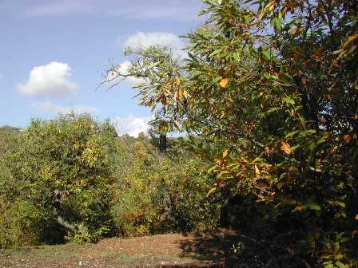
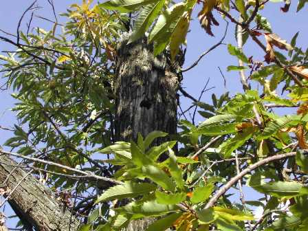
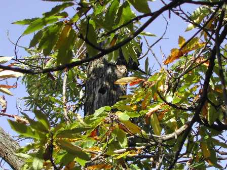

In autunno o in inverno, forse perchè sono le stagioni che più odorano di spirito contemplativo, metto sempre qualche foto dell'ambiente che mi circonda.
Ad un centinaio di metri dal mio lab, in questa radura boschiva tra i castagni ormai in odor di riposo...

...ho beccato (è proprio il caso di dire!) questo magnifico nido di picchio, ben presente nei boschi della mia zona.

Li si sente spesso d'estate che sgranano lunghe mitragliate di -ta-ta-ta-ta-ta-ta-ta-ta- soprattutto sulla corteccia dei castagni vuoti, a produrre quel bel buco che si vede nella foto tra le fronde.

L'autunno, col diradarsi delle foglie, permette poi di trovare più agevolmente anche queste belle sorprese, magari nel tronco di qualche pianta con ancora appeso qualche spinoso riccio.
2 commenti